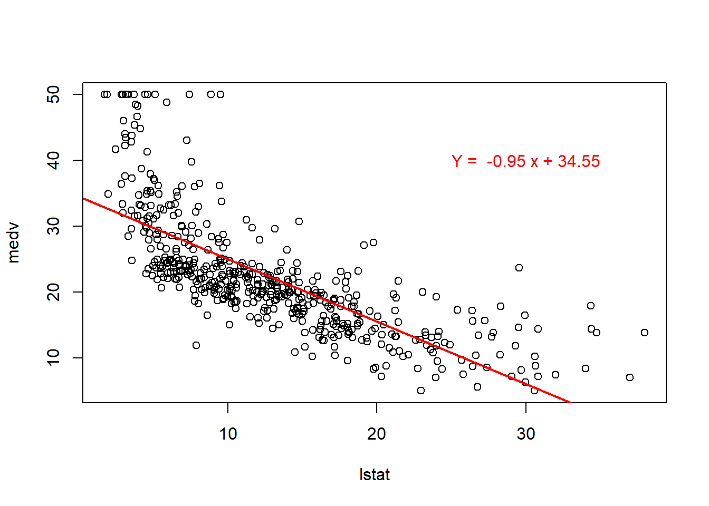
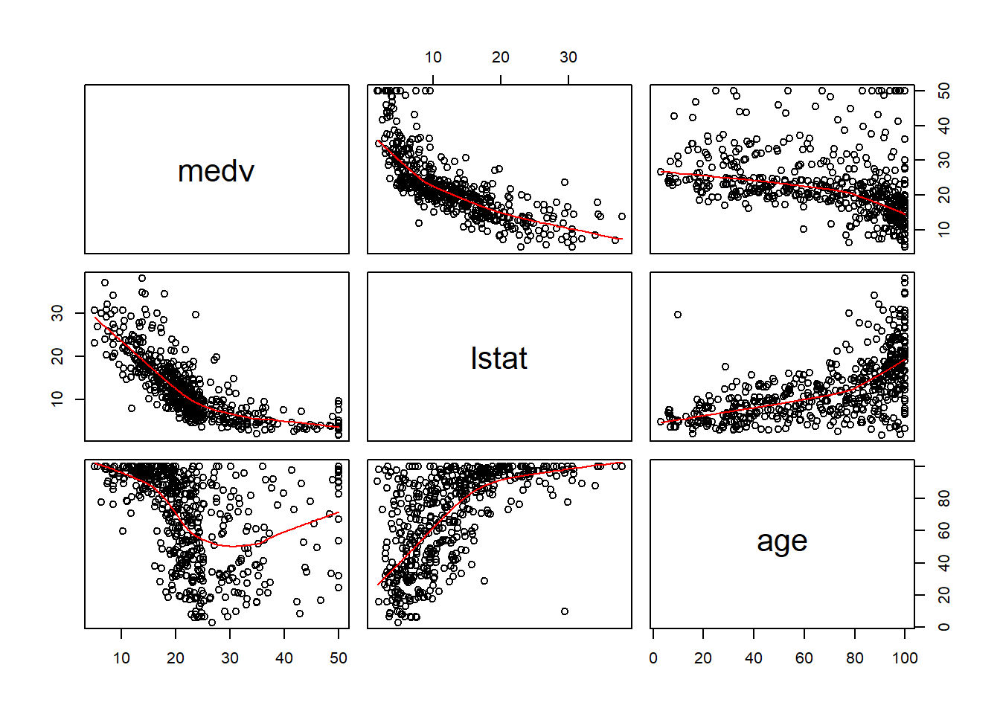

5.2 Práctica en R
5.2.1 Regresión lineal simple
Para realizarla usaremos la base de datos Boston de la librería MASS.
library(MASS)Veamos la descripción de Boston en la ayuda de R:
?Boston## starting httpd help server ... doneObservamos que es un data.frame con 506 observaciones y 14 variables.
Podemos explorar un poco más los datos usando las funciones head, tail y summary.
head(Boston,5)## crim zn indus chas nox rm age dis rad tax ptratio black
## 1 0.00632 18 2.31 0 0.538 6.575 65.2 4.0900 1 296 15.3 396.90
## 2 0.02731 0 7.07 0 0.469 6.421 78.9 4.9671 2 242 17.8 396.90
## 3 0.02729 0 7.07 0 0.469 7.185 61.1 4.9671 2 242 17.8 392.83
## 4 0.03237 0 2.18 0 0.458 6.998 45.8 6.0622 3 222 18.7 394.63
## 5 0.06905 0 2.18 0 0.458 7.147 54.2 6.0622 3 222 18.7 396.90
## lstat medv
## 1 4.98 24.0
## 2 9.14 21.6
## 3 4.03 34.7
## 4 2.94 33.4
## 5 5.33 36.2tail(Boston,5)## crim zn indus chas nox rm age dis rad tax ptratio black
## 502 0.06263 0 11.93 0 0.573 6.593 69.1 2.4786 1 273 21 391.99
## 503 0.04527 0 11.93 0 0.573 6.120 76.7 2.2875 1 273 21 396.90
## 504 0.06076 0 11.93 0 0.573 6.976 91.0 2.1675 1 273 21 396.90
## 505 0.10959 0 11.93 0 0.573 6.794 89.3 2.3889 1 273 21 393.45
## 506 0.04741 0 11.93 0 0.573 6.030 80.8 2.5050 1 273 21 396.90
## lstat medv
## 502 9.67 22.4
## 503 9.08 20.6
## 504 5.64 23.9
## 505 6.48 22.0
## 506 7.88 11.9summary(Boston)## crim zn indus chas
## Min. : 0.00632 Min. : 0.00 Min. : 0.46 Min. :0.00000
## 1st Qu.: 0.08204 1st Qu.: 0.00 1st Qu.: 5.19 1st Qu.:0.00000
## Median : 0.25651 Median : 0.00 Median : 9.69 Median :0.00000
## Mean : 3.61352 Mean : 11.36 Mean :11.14 Mean :0.06917
## 3rd Qu.: 3.67708 3rd Qu.: 12.50 3rd Qu.:18.10 3rd Qu.:0.00000
## Max. :88.97620 Max. :100.00 Max. :27.74 Max. :1.00000
## nox rm age dis
## Min. :0.3850 Min. :3.561 Min. : 2.90 Min. : 1.130
## 1st Qu.:0.4490 1st Qu.:5.886 1st Qu.: 45.02 1st Qu.: 2.100
## Median :0.5380 Median :6.208 Median : 77.50 Median : 3.207
## Mean :0.5547 Mean :6.285 Mean : 68.57 Mean : 3.795
## 3rd Qu.:0.6240 3rd Qu.:6.623 3rd Qu.: 94.08 3rd Qu.: 5.188
## Max. :0.8710 Max. :8.780 Max. :100.00 Max. :12.127
## rad tax ptratio black
## Min. : 1.000 Min. :187.0 Min. :12.60 Min. : 0.32
## 1st Qu.: 4.000 1st Qu.:279.0 1st Qu.:17.40 1st Qu.:375.38
## Median : 5.000 Median :330.0 Median :19.05 Median :391.44
## Mean : 9.549 Mean :408.2 Mean :18.46 Mean :356.67
## 3rd Qu.:24.000 3rd Qu.:666.0 3rd Qu.:20.20 3rd Qu.:396.23
## Max. :24.000 Max. :711.0 Max. :22.00 Max. :396.90
## lstat medv
## Min. : 1.73 Min. : 5.00
## 1st Qu.: 6.95 1st Qu.:17.02
## Median :11.36 Median :21.20
## Mean :12.65 Mean :22.53
## 3rd Qu.:16.95 3rd Qu.:25.00
## Max. :37.97 Max. :50.00Antes de continuar, hacemos la división de Boston en trainy test.
id_train <- sample(1:nrow(Boston), size = 0.8*nrow(Boston))
train <- Boston[id_train, ]
test <- Boston[-id_train, ]Ajustamos el modelo de regresión lineal simple para predecir la variable medv utilizando la variable lstat de nuestro conjunto de datos Boston. Para ello usaremos la función lm.
reg_ls <- lm(medv~lstat, data = train)
reg_ls##
## Call:
## lm(formula = medv ~ lstat, data = train)
##
## Coefficients:
## (Intercept) lstat
## 34.406 -0.948Veamos los coeficientes de la regresión
reg_ls$coefficients## (Intercept) lstat
## 34.4061181 -0.9480419Donde el término independiente es:
reg_ls$coefficients[1]## (Intercept)
## 34.40612y el coeficiente de la variable lstates:
reg_ls$coefficients[2]## lstat
## -0.9480419De manera que la recta de regresión lineal, siendo \(y\) la variable medv y \(x\) la variable lstat, es:
## y = 34.40612 + -0.9480419 xSi queremos obtener los errores residuales de las observaciones correspondientes:
residuales <- reg_ls$residuals
# Veamos los residuales de las 10 primeras observaciones
residuales[1:10]## 160 428 449 312 132 181
## -4.10008860 -9.74054994 -3.11811873 -6.63682766 -3.18312461 12.56107852
## 45 468 408 154
## -4.15231812 4.90613489 4.99362995 -0.03653674Una vez obtenido el modelo de regresión lineal, para realizar la predicción sobre un nuevo conjunto de datos, utilizamos la función predict, de la siguiente manera:
predic <- predict(reg_ls, newdata = test)
#Veamos la predicción de las 10 primeras observaciones
predic[1:10]## 5 11 15 19 20 28 30
## 29.353055 15.018662 24.679208 23.323508 23.712206 18.023954 23.048576
## 33 36 38
## 8.135877 25.229073 26.091791Algunas representaciones gráficas de un modelo de regresión son:
- Dispersión de los puntos y la recta de regresión lineal simple obtenida:
regresion <- lm(medv~lstat, data = Boston)
plot(Boston$lstat, Boston$medv, xlab = "lstat", ylab = "medv")
abline(regresion, col='red', lwd=2)
a <- regresion$coefficients[[1]]
b <- regresion$coefficients[[2]]
text(30,40,labels = paste('Y = ', round(b,2),'x +', round(a,2)), col='red')
- Análisis de residuos:
par(mfrow=c(2,2))
plot(regresion)
5.2.2 Regresión lineal múltiple
Utilizamos lo mismo que hemos hecho para la regresión lineal simple, con la diferencia de que ahora hay más de una variable independiente.
Usamos la misma función, lm, y la sucesión de variables independientes estarán separadas con un +, es decir:
reg_lm <- lm(medv~lstat + age, data = train)
reg_lm##
## Call:
## lm(formula = medv ~ lstat + age, data = train)
##
## Coefficients:
## (Intercept) lstat age
## 33.14816 -1.03036 0.03329Veamos los coeficientes de la regresión
reg_lm$coefficients## (Intercept) lstat age
## 33.14815946 -1.03036412 0.03328534Donde el término independiente es:
reg_lm$coefficients[1]## (Intercept)
## 33.14816el coeficiente de la variable lstat es:
reg_lm$coefficients[2]## lstat
## -1.030364y el coeficiente de la variable age es:
reg_lm$coefficients[3]## age
## 0.03328534De manera que la recta de regresión lineal, siendo \(y\) la variable medv, \(x1\) la variable lstat y \(x2\) la variable age, será:
## y = 33.14816 + -1.030364 x1 + 0.03328534 x2Veamos los gráficos de dispersión 2 a 2:
pairs(Boston[,c('medv','lstat', 'age')],panel = panel.smooth)
Análogamente a como hemos hecho con la regresión lineal, podemos obtener los residuos y utilizar la función predict en un nuevo conjunto de datos.
Hay otras opciones de poner la variables independientes. Por ejemplo, si quisieramos usar todas las variables, como conjunto de variables independientes, bastaría con escribir:
reg_lm2 <- lm(medv~., data = train)
reg_lm2##
## Call:
## lm(formula = medv ~ ., data = train)
##
## Coefficients:
## (Intercept) crim zn indus chas
## 34.785192 -0.118096 0.048020 0.030283 2.828830
## nox rm age dis rad
## -13.909169 3.644206 -0.001432 -1.436879 0.333283
## tax ptratio black lstat
## -0.013701 -0.910308 0.011107 -0.581303Por otro lado, si quisieramos usarlas todas excepto alguna, podemos escribir:
reg_lm3 <- lm(medv~.-age, data = train)
reg_lm3##
## Call:
## lm(formula = medv ~ . - age, data = train)
##
## Coefficients:
## (Intercept) crim zn indus chas
## 34.81143 -0.11822 0.04816 0.03027 2.82593
## nox rm dis rad tax
## -14.01174 3.63657 -1.42979 0.33375 -0.01371
## ptratio black lstat
## -0.91157 0.01109 -0.58302